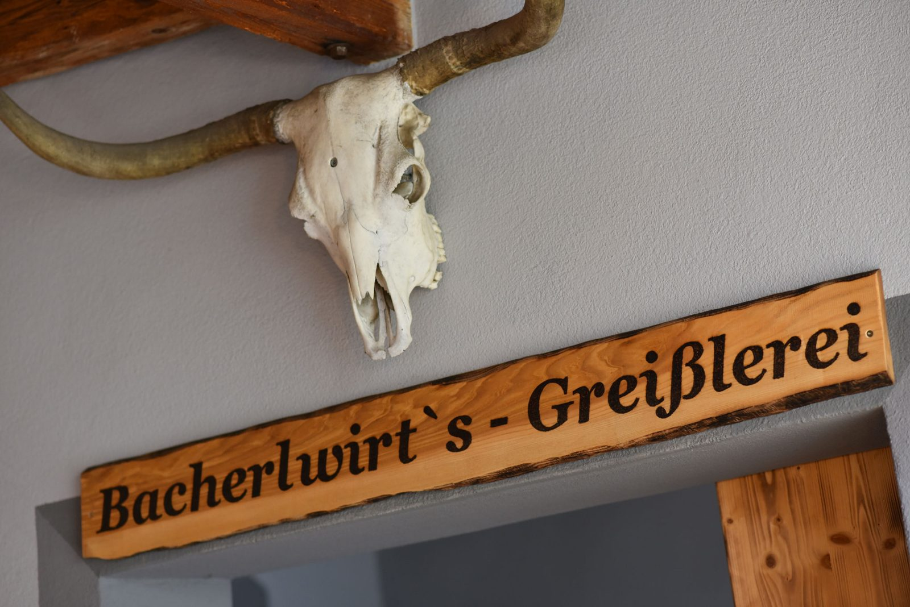
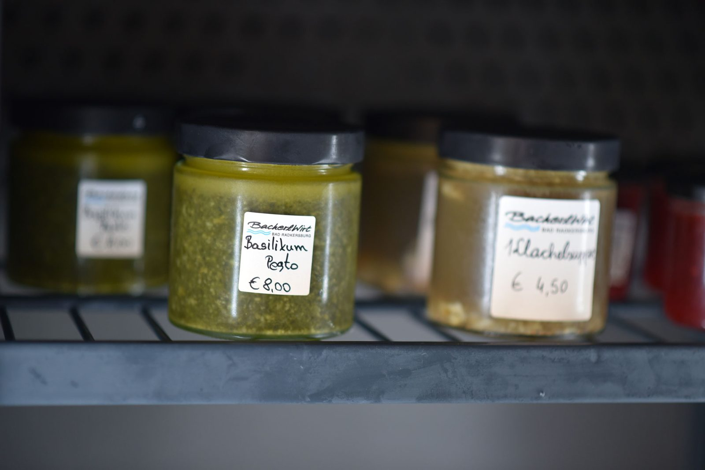
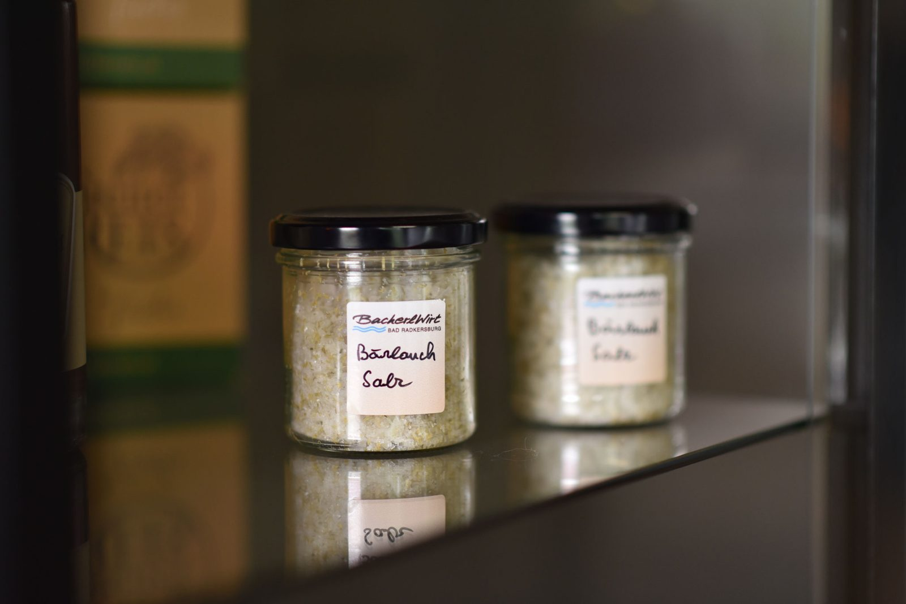
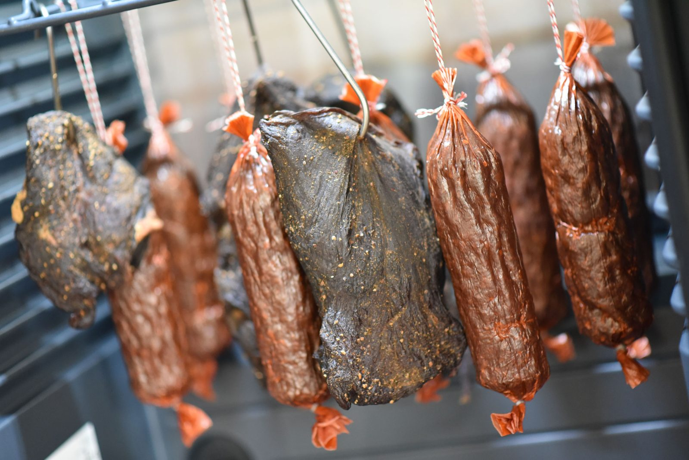
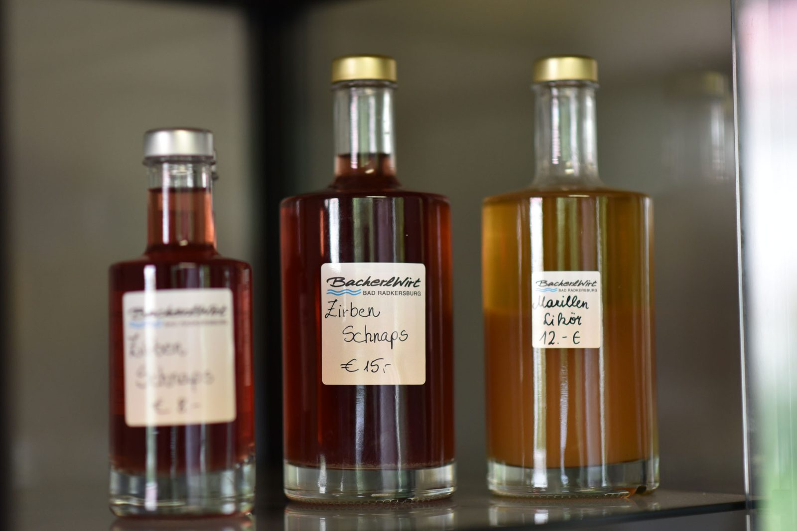
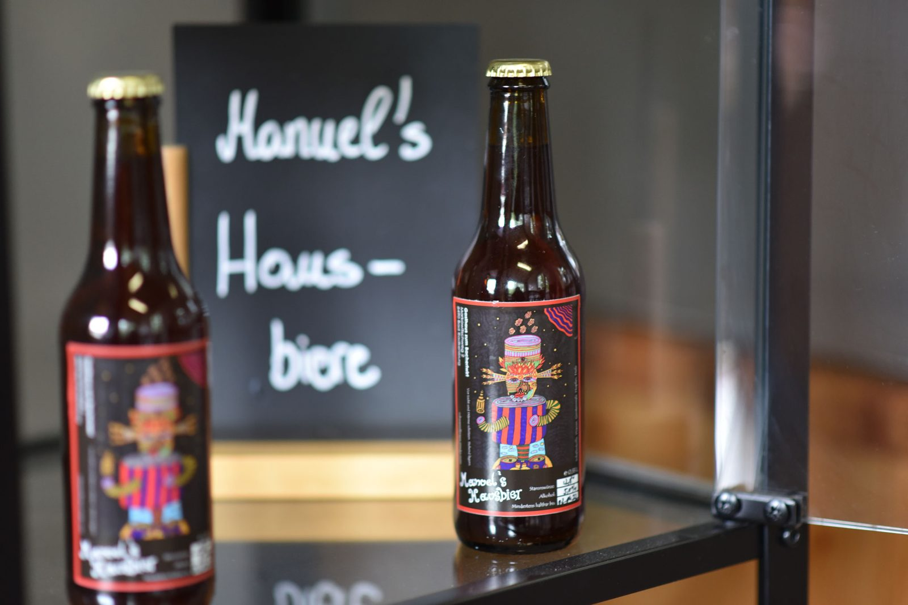
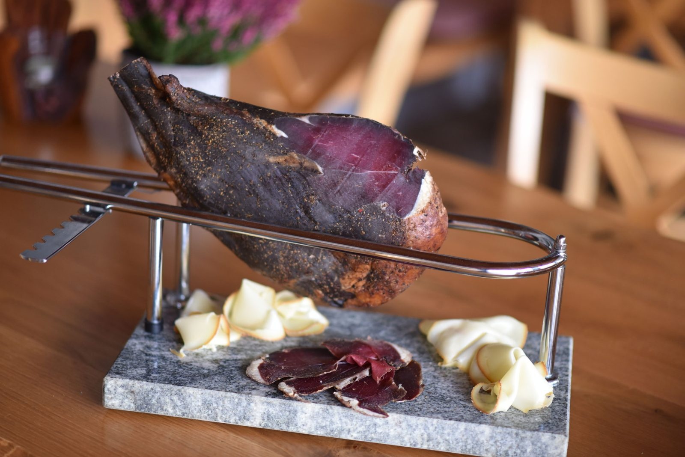

Start › Greißlerei
GreißlereiHausgemachte Köstlichkeiten
Erlesene hausgemachte Köstlichkeiten zum Mitnehmen. Bei uns wird alles selbst und mit viel Liebe produziert – fragen Sie einfach den Chef!
Was bei uns über die Budel geht
Egal ob es unsere gereiften Dry-Aged-Steaks, die im hauseigenen Reifeschrank mindestens 27 Tage lang reifen, Geselchtes von höchster Qualität, g’schmackige Gewürzmischungen, Chutneys, Pestos oder etwas Feines zur Verdauung ist: Hier findet sich bestimmt für jeden etwas.
Bei uns wird alles selbst und mit viel Liebe produziert. Fragen Sie einfach den Chef!

Eine kleine Auflistung unserer Köstlichkeiten
Preise, die auf der bestehenden Website ausgewiesen sind, haben wir übernommen. Für alles Weitere fragen Sie bitte direkt im Haus nach – wir erfinden keine Preise.






Bestellung & Gutschein
Reservieren Sie sich Ihr Steak aus dem Reifeschrank oder bestellen Sie einen Gutschein – wir legen alles für Sie bereit, abgeholt wird im Gasthaus.